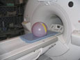

Illustration 2: Set-up for the 24cm FOV Field Map - Head TLT Sphere in Head Coil

The following illustrations show the set-up.
Illustration 1: Set-up for the 48cm and 28cm Field Map - Body TLT Sphere on Pads

Illustration 2: Set-up for the 24cm FOV Field Map - Head TLT Sphere in Head Coil
Illustration 3: Basic Shim User Interface After Clicking [Calculate Shim]

Illustration 4: Advanced Shim User Interface

Illustration 5: Basic Shim User Interface